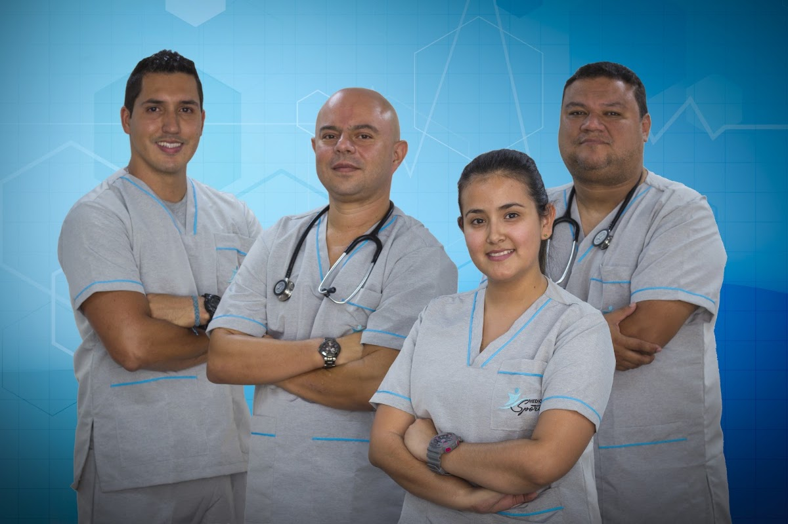
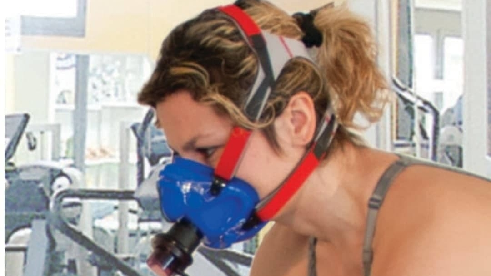
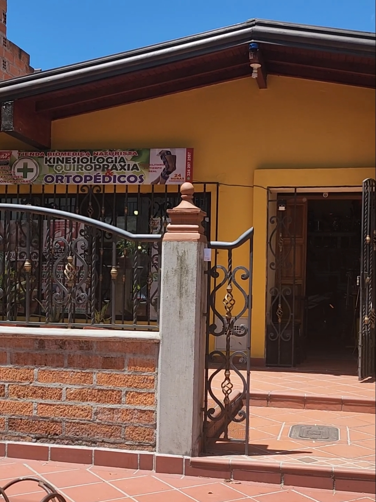

En BMS – Biomedics Mohammedth Sports rehabilitamos lesiones musculoesqueléticas, neurológicas y deportivas con kinesiología, quiropraxia y productos ortopédicos especializados.

Del diagnóstico al tratamiento y al equipamiento ortopédico: te acompañamos en cada etapa de tu rehabilitación.
Ajustes y terapia articular para aliviar dolores de espalda, cuello y mejorar tu postura.
Rehabilitación del movimiento para lesiones deportivas, musculoesqueléticas y neurológicas.
Masaje terapéutico y descontracturante para recuperar tus músculos después del esfuerzo.
Venta y alquiler de ortopédicos: rodilleras, férulas, ayudas para tu proceso de recuperación.

Somos un centro de rehabilitación física integral en el corazón de Laureles-Estadio. Combinamos la kinesiología, la quiropraxia y la tienda biomédica para que encuentres todo tu proceso de recuperación en un solo lugar.
Estamos a pasos del Estadio Atanasio Girardot, con entrada y parqueadero accesibles para personas con movilidad reducida.

"66 pacientes nos han calificado con 4.9 estrellas en Google. Tu recuperación está en buenas manos."BMS · Centro de Rehabilitación Física · Medellín
Sí, contamos con atención de emergencias las 24 horas. Escríbenos por WhatsApp y te orientamos de inmediato.
La kinesiología se enfoca en la rehabilitación del movimiento tras una lesión; la quiropraxia trabaja ajustes articulares, especialmente de columna, para aliviar dolor y mejorar la postura. En BMS combinamos ambas según tu caso.
Sí, nuestra tienda biomédica está disponible para la compra directa de rodilleras, férulas y otras ayudas, con o sin cita previa.
Sí, nuestra sede en Laureles-Estadio cuenta con entrada y parqueadero accesibles para todos los pacientes.
Cra. 76 #49-86
Laureles-Estadio, Medellín
+57 324 297 2587
Atención 24 horas
4.9 · 66 reseñas
Cerca al Estadio Atanasio Girardot. Encuéntranos en Google Maps.
Ver en Google Maps Escribir por WhatsApp